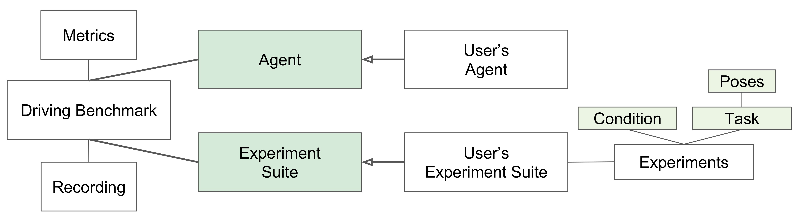

驾驶基准结构
下图显示了驾驶基准模块的总体结构。
 图：代理基准测试模块的总体结构。
驾驶基准 是负责评估实验套件中某个代理的模块。
实验套件是一个抽象模块。因此，用户必须定义自己的实验套件派生。我们已经提供了 CoRL2017 套件和一个简单的 实验套件 供测试。
实验套件由一组实验组成。每个实验包含一个由一组导航情节组成的任务，由一组姿势表示。这些姿势是包含情节起点和终点的元组。
实验还与条件相关联。条件由 carla 设置对象表示。条件指定模拟参数，例如：天气、传感器套件、车辆和行人数量等。
用户还应该派生一个代理类。代理是将在驾驶基准上进行评估的主动部分。
驾驶基准测试还包含两个辅助模块。记录模块用于跟踪所有测量值，并可用于暂停和继续驾驶基准测试。 指标模块用于使用记录的测量值计算性能指标。
示例：CORL 2017
我们已经提供了用于对 CoRL 2017 论文的代理进行基准测试的 CoRL 2017 实验套件。
CoRL 2017 实验套件的组成如下：
- 每个 CARLA 城镇共进行 24 个实验，包括：
- 直行的任务。
- 进行一次转弯的任务。
- 前往任意位置的任务。
-
带着动态物体前往任意位置的任务。
-
每个任务由 25 个姿势组成，在 6 种不同的天气条件下重复执行（晴朗中午、大雨中午、晴朗日落、雨后中午、雨后多云和小雨日落）。
- 整个实验集共有600集。
- 根据代理的性能，CoRL 2017 可能需要最多 24 小时才能为 Town01 执行，最多 15 小时才能为 Town02 执行。